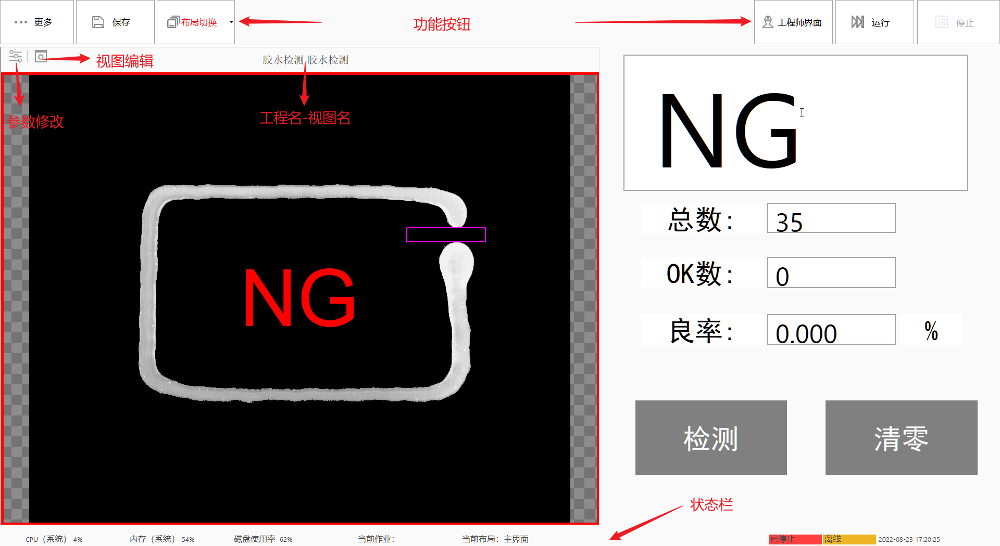
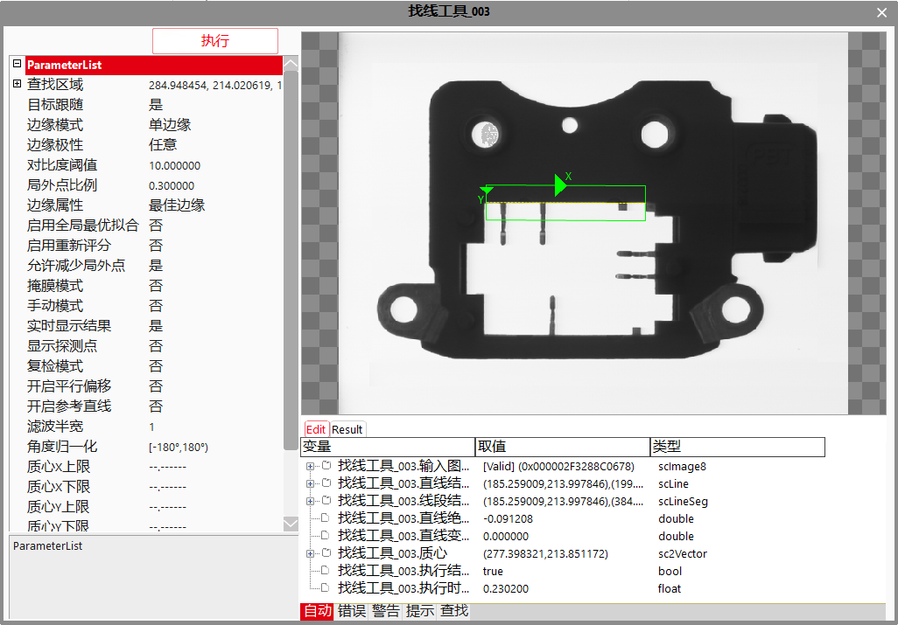
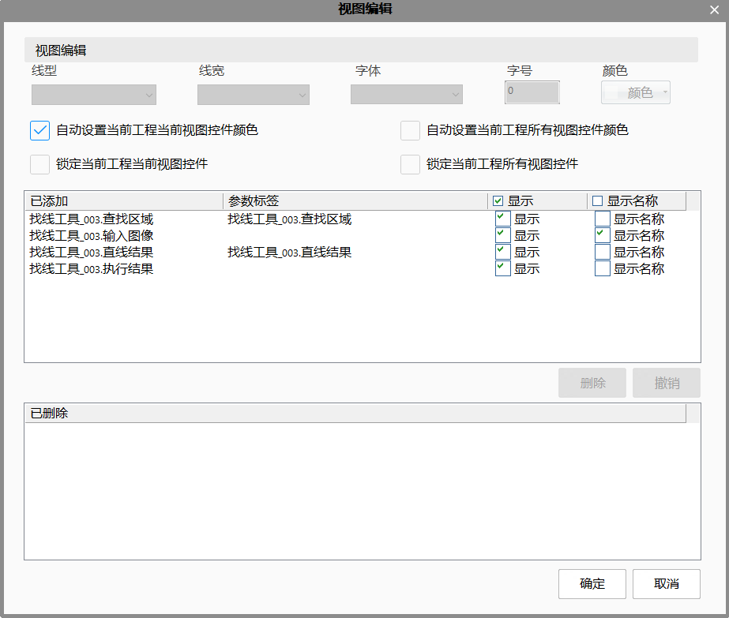
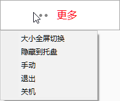
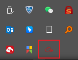
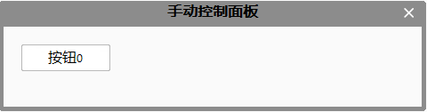
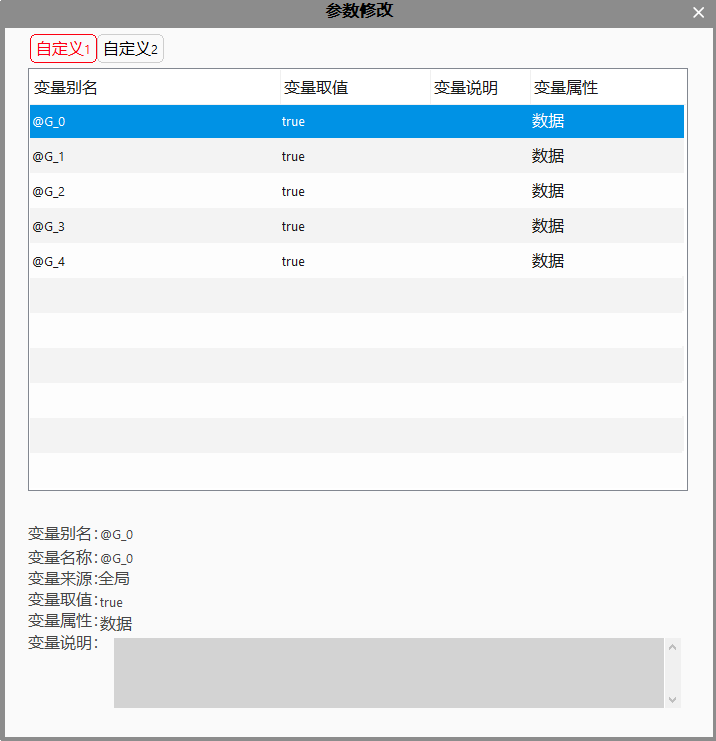
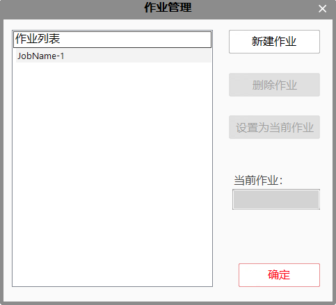
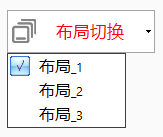

视图工具栏：显示工具的弹出参数修改界面和视图编辑。
参数修改：鼠标单击选中需要修改参数的工具，弹出参数修改界面，如下图为找线工具的参数修改界面。

视图编辑：可以编辑view里面显示的UI包括线型、线宽、字体、字号和颜色等，可以删除或者撤销视图里面的UI，可对链接的窗口文本坐标进行自定义设置。

更多：

大小全屏切换：改变生产界面的大小：全屏可以显示或者遮挡任务栏；
隐藏到托盘：界面最小化，并将软件图标隐藏到托盘

手动：手动控制面板，由“控制-更多控制”来自定义手动控制面板，如下图所示；

退出：退出程序；
关机，关闭计算机；
保存：对编辑后的解决方案进行保存。
参数设置：显示分组数据，可以修改分组数据的数值，也可以修改变量的别名。选中此数据，点击“变量取值”区域，可以对数值进行修改，变量别名的修改与变量数值的修改方法一致。对话框下面会显示此参数的一些信息。

作业管理：统计分析中作业名的管理
作业名的实质是一个标识，标识数据属于哪个作业名下。可以新建一个作业名，删除作业名和设置为当前的作业。设置为当前作业之后，对应的统计分析——生产界面模块会对数据进行筛选，筛选的数据依据当前作业名。
注意
当删除一个作业名的时候，对应的作业名下的数据也会被删除。删除的数据会同步备份到对应的LusterCache\DBfiles\时间.csv，文件中保存的是删除的作业名及其作业名下的数据。

布局切换：可以对布局进行切换。
布局前面打钩表示当前显示的布局，加粗表示主布局。
注意
如果开启自动切换布局功能，生产界面在运行状态时，布局会根据相关的变量数值进行自动切换。 如果软件正在运行，当自动切换布局和手动切换布局发生冲突时，以最后一次切换的布局为准。 如果出现了提示对话框，此时不会自动切换布局。需要关闭对话框或者解决出现弹出对话框的问题之后才会切换布局。

运行：即全部运行，运行所有的工程。
停止：停止工程。
暂停：暂停工程，在所有工程都处于暂停状态时，可以修改参数。
继续：继续工程运行
工程师界面：退出生产界面，进入工程编辑主界面；
控件：包括只读和非只读控件。非只读控件可以更改数值，从而修改与之关联的数据。只读数据只能查看数值，不能修改。
单个视图最大化：双击要最大化的视图，如果需要还原，再双击此视图。
状态栏：显示资源数、句柄数、CPU、内存、磁盘使用率、系统时间等信息。